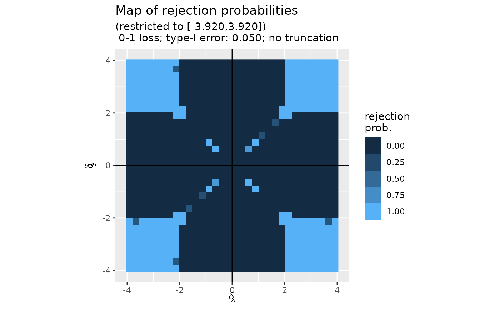

Computing 'map's of rejection probabilities for the Bayes risk optimal test
compute_map_rejection_probs.RdComputes the "map" of rejection probabilities for the Bayes risk optimal test of the composite null "\(\delta_x \times \delta_y=0\)" against its alternative "\(\delta_x \times \delta_y\neq 0\)" based on the test statistic in the real plane. The Bayes risk is induced by either the 0-1 or the bounded quadratic loss function, a wished type-I error and, possibly, a truncation parameter.
Usage
compute_map_rejection_probs(
alpha = 0.05,
K = 16,
loss = c("0-1", "quadratic"),
truncation = 0,
return_solver = FALSE
)Arguments
- alpha
A positive
numeric, the wished type-I error (default value 0.05).- K
An
integerparametrizing the discretization of the null hypothesis test and of the plane. The complexity of the resulting optimization problem is \(O(K^2)\), so 'K' should neither be too small nor too large. The default value is 'K=16'. We recommend 'K=64' as a sensible value and enforce \(2 \leq K \leq 128\).- loss
A
character, either "0-1" (default value) or "quadratic", to indicate which loss function to consider.- truncation
A nonnegative
numeric, enabling to bound away the rejection region from the null hypothesis space. Its default value is 0, meaning that no truncation is required.- return_solver
A
logical, to request that the 'lpSolve' object be returned (if 'TRUE') or not (if 'FALSE', default). Note that the 'lpSolve' object can be quite big.
Value
A '2K x 2K' matrix whose '(i,j)' coefficient is the
probability to reject the null when the test statistic falls in the
square \([b(i-1-K)/K, b(i-K)/K] \times [b(j-1-K)/K, b(j-K)/K]\). If
'return_solver' is 'TRUE', then the matrix has an attribute called
'solver' which is the complete output of the optimization function
'lpSolve::lp' used to determine the probabilities.
Examples
## one of the four outputs of 'compute_map_rejection_probs' stored in the package
head(map_01_0.05, c(5, 5))
#> [,1] [,2] [,3] [,4] [,5]
#> [1,] 1 1 1 1 1
#> [2,] 1 1 1 1 1
#> [3,] 1 1 1 1 1
#> [4,] 1 1 1 1 1
#> [5,] 1 1 1 1 1
map <- compute_map_rejection_probs(alpha = 0.05, K = 16, loss = "0-1")
plot(map)
